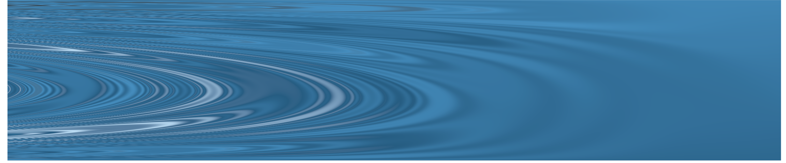

Information for Students
Research group
Current members
- Jiaping Liu, PhD in Statistics
- Rachel Lobay, PhD in Statistics
- Tigana Runte, MSc in Statistics
- Elvis Cai, MSc in Statistics (co-supervised with Paul Gustafson)
- William Laplante, MSc in Statistics (co-supervised with Ben Bloem-Reddy)
Alumni
- Ken Mawer, NSERC USRA (UBC 2022); BSc Student at UBC
- Shuyi Tan, MSc in Statistics (UBC 2022); Data Analyst at VGH & UBC Hospital Foundation
- Xiaoxuan Liang, MSc in Statistics (UBC 2022); PhD student in Computer Science at UBC
- Wei Tang, MSc in Statistics (UBC 2022); Data Scientist at Amazon
- Aaron Cohen, PhD Qualifier (IUB 2021); PhD student in Statistics at IUB
- Lei Ding, PhD in Statistics (IUB 2020); Data Scientist at Amazon
- Robert Granger, PhD Qualifier (IUB 2020); PhD student in Statistics at IUB
- Haoran Liu, MSc in Statistics (IUB 2020); PhD student in Statistics at IUB
- Mackenzie Turner, CEW&T Emerging Scholars REU (IUB 2020); BA student in SPEA at IUB
- Arash Khodadadi, MSc in Statistics (IUB 2018); Data Scientist at Advanced Microgrid Solutions
- Michael McBride, BSc in Statistics (IUB 2018); Software Developer at Epic
- Jia Wang, MSc in Statistics (IUB 2017); PhD student in Biostatistics at SUNY Buffalo
- Lijiang Guo, PhD Qualifier (IUB 2014); PhD student in ISE at IUB

Applying to UBC Statistics or MDS Programs
I generally have no special powers when it comes to being admitted to MSc/PhD or MDS programs. At UBC, students are admitted to the department before choosing an advisor later in their program. If you are interested, I encourage you to consult the department website.
If you want to learn more, your best bet is to email the Graduate Admissions Officer.
Requesting letters of recommendation
I frequently get requests for letters of recommendation, and I’m generally happy to comply. However, unless we regularly interacted, it is unlikely that I can provide useful information to a recruiter or admissions committee member. In these cases, I can provide a “took a class with me letter”, but I highly recommend asking someone else who can provide more detailed descriptions of your unique strengths. If you are currently enrolled in class with me, I will ask that you attend office hours, ask questions, of in another way give me some information about yourself.
In order for me to write, I will need at least two weeks notice before the first deadline.
A list of all positions to which you are applying along with deadlines for each.
A recent CV or resume that includes a list of courses taken in your major and a unofficial transcript.
A personal statement (likely the one you’re sending in one of the applications).
Answers to the following questions as possible:
- For what class(es) have I been the instructor and how did you distinguish yourself in my class(es)? Did we have any notable interactions I should highlight.
- What makes me particularly qualified to write a letter for you?
- What are your long-term goals?
- A list of 3 adjectives that describe you with a sentence saying why. Be creative.